CODING AGENTS AS PIXEL WORLD MODELS
traex/DeepSeek-V4.1-Flash · 0153
点击播放 · 原生 RGB 像素
逐轮保存的候选
回放视频、检查图与代码变化。
每份候选均可单独播放。实际图片检查记录在下方工具轨迹中。
候选 01播放与检查图
点击播放 · 原生 RGB 像素
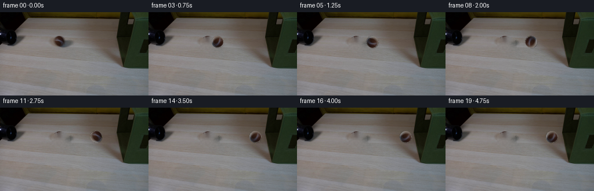
展开代码变化
--- 上一保存版本
+++ 本次保存版本
@@ -0,0 +1,148 @@
+from pathlib import Path
+
+import cv2
+import numpy as np
+from PIL import Image
+
+import artifact_io
+
+
+ROOT = Path(__file__).resolve().parent
+N_FRAMES = 20
+FPS = 4
+WIDTH, HEIGHT = 256, 144
+
+# The ball and its contact shadow in the supplied first frame.
+BALL_CENTER = np.array([101.0, 51.3])
+BALL_RADIUS = 10.2
+
+
+def make_clean_plate(first: np.ndarray) -> np.ndarray:
+ """Remove the foreground ball and shadow while retaining the table grain."""
+ mask = np.zeros((HEIGHT, WIDTH), dtype=np.uint8)
+ cv2.ellipse(mask, (104, 53), (16, 11), 0, 0, 360, 255, -1)
+ cv2.ellipse(mask, (108, 59), (14, 6), 0, 0, 360, 255, -1)
+ plate = cv2.inpaint(first, mask, 7, cv2.INPAINT_TELEA)
+
+ # A very light grain pass hides the smooth inpaint patch at the source scale.
+ yy, xx = np.mgrid[0:HEIGHT, 0:WIDTH]
+ local = ((xx >= 84) & (xx <= 122) & (yy >= 38) & (yy <= 69)).astype(np.float32)
+ local = cv2.GaussianBlur(local, (0, 0), 3.0)
+ rng = np.random.default_rng(153)
+ noise = cv2.GaussianBlur(rng.normal(0.0, 3.0, (HEIGHT, WIDTH)), (0, 0), 0.7)
+ grain = np.stack([noise, noise * 0.92, noise * 0.86], axis=2)
+ plate = np.clip(plate.astype(np.float32) + grain * local[:, :, None], 0, 255)
+ return plate.astype(np.uint8)
+
+
+def make_ball_sprite(first: np.ndarray):
+ """Extract the supplied ball and build a soft circular alpha matte."""
+ x0, y0 = 87, 37
+ x1, y1 = 116, 67
+ crop = first[y0:y1, x0:x1].astype(np.float32)
+ h, w = crop.shape[:2]
+ yy, xx = np.mgrid[0:h, 0:w]
+ cx = BALL_CENTER[0] - x0
+ cy = BALL_CENTER[1] - y0
+ dist = np.hypot(xx - cx, yy - cy)
+ alpha = np.clip(BALL_RADIUS + 0.65 - dist, 0.0, 1.0)
+ alpha = cv2.GaussianBlur(alpha, (0, 0), 0.35)
+
+ # Remove the background immediately around the lower edge before it is
+ # carried into the rotating sprite.
+ edge_clean = alpha[:, :, None] * crop + (1.0 - alpha[:, :, None]) * np.array(
+ [134.0, 129.0, 126.0]
+ )
+ rgba = np.dstack([edge_clean, alpha * 255.0]).astype(np.uint8)
+ return Image.fromarray(rgba, "RGBA"), (x0, y0)
+
+
+def ball_position(frame: int) -> tuple[float, float, float]:
+ """Return center x, center y, and accumulated roll angle."""
+ start_x = float(BALL_CENTER[0])
+ contact_x = 189.4
+ speed = (contact_x - start_x) / 15.0
+
+ if frame <= 15:
+ x = start_x + speed * frame
+ else:
+ # A small, damped rebound from the fabric-covered box.
+ t = frame - 15
+ x = contact_x - (2.6 * t - 0.25 * t * t)
+
+ # The path is nearly level; only a subpixel perspective drift is visible.
+ y = float(BALL_CENTER[1]) - (x - start_x) * 0.006
+ travel = x - start_x
+ angle = -np.degrees(travel / BALL_RADIUS)
+ return x, y, angle
+
+
+def composite_rgba(base: np.ndarray, sprite: Image.Image, x: float, y: float) -> np.ndarray:
+ """Composite an RGBA sprite with subpixel placement."""
+ sw, sh = sprite.size
+ left = int(np.floor(x - sw / 2.0))
+ top = int(np.floor(y - sh / 2.0))
+ fx = x - sw / 2.0 - left
+ fy = y - sh / 2.0 - top
+
+ canvas = Image.new("RGBA", (WIDTH, HEIGHT), (0, 0, 0, 0))
+ canvas.alpha_composite(sprite, (left, top))
+ if fx > 0 or fy > 0:
+ shifted = Image.new("RGBA", (WIDTH, HEIGHT), (0, 0, 0, 0))
+ shifted.alpha_composite(sprite, (left + (fx > 0), top + (fy > 0)))
+ canvas = Image.blend(canvas, shifted, float(np.clip((fx + fy) / 2.0, 0, 1)))
+
+ rgba = np.asarray(canvas, dtype=np.float32)
+ alpha = rgba[:, :, 3:4] / 255.0
+ out = rgba[:, :, :3] * alpha + base.astype(np.float32) * (1.0 - alpha)
+ return np.clip(out, 0, 255).astype(np.uint8)
+
+
+def add_shadow(image: np.ndarray, x: float, y: float, contact: bool) -> np.ndarray:
+ """Add a short tabletop shadow that travels with the ball."""
+ yy, xx = np.mgrid[0:HEIGHT, 0:WIDTH]
+ cx = x + 4.2
+ cy = y + 7.2
+ spread = 1.0 + 0.18 * contact
+ ellipse = ((xx - cx) / (10.8 * spread)) ** 2 + ((yy - cy) / (3.5 * spread)) ** 2
+ shadow = np.clip(1.0 - ellipse, 0.0, 1.0)
+ shadow = cv2.GaussianBlur(shadow.astype(np.float32), (0, 0), 2.2)
+ strength = 0.22 + 0.08 * contact
+ tint = np.array([76.0, 69.0, 65.0])
+ out = image.astype(np.float32)
+ out = out * (1.0 - shadow[:, :, None] * strength) + tint * shadow[:, :, None] * strength
+ return np.clip(out, 0, 255).astype(np.uint8)
+
+
+def make_frames(first: np.ndarray) -> np.ndarray:
+ plate = make_clean_plate(first)
+ source_sprite, (sprite_x, sprite_y) = make_ball_sprite(first)
+ frames = [first.copy()]
+
+ for frame in range(1, N_FRAMES):
+ x, y, angle = ball_position(frame)
+ # Rotation about the sprite center; resampling is bicubic for a smooth
+ # striped ball rather than a pixel-jittered cutout.
+ rotated = source_sprite.rotate(
+ angle,
+ resample=Image.Resampling.BICUBIC,
+ expand=False,
+ )
+ contact = float(np.clip((x - 176.0) / 14.0, 0.0, 1.0))
+ image = add_shadow(plate, x, y, contact)
+ image = composite_rgba(image, rotated, x, y)
+ frames.append(image)
+
+ return np.asarray(frames, dtype=np.uint8)
+
+
+def main():
+ first = np.asarray(Image.open(ROOT / "first_frame.png").convert("RGB"), dtype=np.uint8)
+ assert first.shape == (HEIGHT, WIDTH, 3)
+ frames = make_frames(first)
+ assert frames.shape == (N_FRAMES, HEIGHT, WIDTH, 3)
+ artifact_io.save(frames, ROOT)
+
+
+if __name__ == "__main__":
+ main()
候选 02播放与检查图
点击播放 · 原生 RGB 像素

展开代码变化
--- 上一保存版本
+++ 本次保存版本
@@ -54,13 +54,13 @@
[134.0, 129.0, 126.0]
)
rgba = np.dstack([edge_clean, alpha * 255.0]).astype(np.uint8)
- return Image.fromarray(rgba, "RGBA"), (x0, y0)
+ return Image.fromarray(rgba)
def ball_position(frame: int) -> tuple[float, float, float]:
"""Return center x, center y, and accumulated roll angle."""
start_x = float(BALL_CENTER[0])
- contact_x = 189.4
+ contact_x = 191.8
speed = (contact_x - start_x) / 15.0
if frame <= 15:
@@ -116,7 +116,7 @@
def make_frames(first: np.ndarray) -> np.ndarray:
plate = make_clean_plate(first)
- source_sprite, (sprite_x, sprite_y) = make_ball_sprite(first)
+ source_sprite = make_ball_sprite(first)
frames = [first.copy()]
for frame in range(1, N_FRAMES):
候选 03播放与检查图

可观测工具轨迹
实际执行的命令与返回图片。
命令 1exit 0
/bin/bash -c "pwd && rg --files -g 'prompt.txt' -g 'GENERATION_RULES.md' -g '"'!node_modules'"' -g '"'!venv'"' | sort"
命令 2exit 0
/bin/bash -c "ls -la && find . -maxdepth 2 -type f -printf '%p %s bytes\\n' | sort | head -100"
命令 3exit 0
/bin/bash -c 'cat GENERATION_RULES.md'
命令 4exit 0
/bin/bash -c 'cat prompt.txt'
命令 5exit 0
/bin/bash -c "sed -n '1,240p' artifact_io.py && sed -n '1,240p' player_template.html"
命令 6exit 0
/bin/bash -c "python - <<'PY'
from PIL import Image
im=Image.open('first_frame.png')
print(im.size, im.mode)
PY"命令 7exit 0
/bin/bash -c "python - <<'PY' import importlib.util for m in ['cv2','scipy','skimage','numpy','PIL']: print(m, bool(importlib.util.find_spec(m))) PY"
命令 8exit 0
/bin/bash -c 'command -v ffmpeg || true; command -v convert || true'
命令 9exit 0
/bin/bash -c "python - <<'PY'
from PIL import Image
im=Image.open('first_frame.png')
im.resize((1024,576)).save('.tmp/first_x4.png')
PY"命令 10exit 0
/bin/bash -c "python - <<'PY'
from PIL import Image
im=Image.open('first_frame.png')
im.crop((70,40,150,100)).resize((640,480)).save('.tmp/ball_crop.png')
im.crop((0,0,70,100)).resize((560,800)).save('.tmp/tube_crop.png')
im.crop((190,0,256,110)).resize((528,880)).save('.tmp/box_crop.png')
PY"命令 11exit 0
/bin/bash -c "python - <<'PY'
from PIL import Image
import numpy as np
im=np.array(Image.open('first_frame.png'))
# print unique / ranges in ball crop
for y in range(50,88):
vals=[]
for x in range(85,130):
r,g,b=map(int,im[y,x])
if r>g*1.12 and r>b*1.25 and r>55: vals.append((x,(r,g,b)))
if vals: print(y, vals[:3], vals[-3:])
PY"命令 12exit 0
/bin/bash -c "python - <<'PY'
from PIL import Image
import numpy as np
im=np.array(Image.open('first_frame.png'))
# mean background values
for y in [55,60,65,70,75,80]:
print('y',y, 'L',im[y,80], 'R',im[y,135], 'LR',im[y,160])
# center around ball from visual
for y in range(58,82):
print(y, [tuple(map(int,im[y,x])) for x in range(94,125,5)])
PY"命令 13exit 0
/bin/bash -c "python - <<'PY'
from PIL import Image
import numpy as np, cv2
im=np.array(Image.open('first_frame.png'))
hsv=cv2.cvtColor(im,cv2.COLOR_RGB2HSV)
# print max saturation in region
reg=hsv[45:95,80:145]
ys,xs=np.where((reg[:,:,1]>40)&(reg[:,:,2]>35))
print(xs.min()+80,xs.max()+80,ys.min()+45,ys.max()+45, len(xs))
for y in range(52,86):
row=[]
for x in range(90,132):
s=hsv[y,x,1]
if s>50: row.append(x)
if row: print(y,min(row),max(row),len(row))
PY"命令 14exit 0
/bin/bash -c "python - <<'PY'
from PIL import Image
im=Image.open('first_frame.png')
im.crop((75,35,150,100)).resize((900,780)).save('.tmp/ball_detail.png')
PY"命令 15exit 0
/bin/bash -c "python - <<'PY'
from PIL import Image
import numpy as np, cv2
im=np.array(Image.open('first_frame.png'))
# test values with saturation
hsv=cv2.cvtColor(im,cv2.COLOR_RGB2HSV)
for y in range(45,62):
vals=[]
for x in range(86,121):
r,g,b=map(int,im[y,x]); s=int(hsv[y,x,1]); hh=int(hsv[y,x,0])
if s>45 and r>g: vals.append((x,(r,g,b),hh,s))
if vals: print(y, vals[:2], vals[-2:])
PY"命令 16exit 0
/bin/bash -c "python - <<'PY'
from PIL import Image
im=Image.open('first_frame.png')
im.crop((0,60,60,144)).resize((480,672)).save('.tmp/black_end.png')
PY"命令 17exit 0
/bin/bash -c "python - <<'PY'
from PIL import Image
import numpy as np
im=np.array(Image.open('first_frame.png'))
for y in [60,70,80,90,100,110,120,130,140]:
print(y, [(x,tuple(im[y,x])) for x in [30,40,50,60,65,70,75,80]])
PY"命令 18exit 0
/bin/bash -c "python - <<'PY'
from PIL import Image
import numpy as np
im=np.array(Image.open('first_frame.png'))
# determine table boundary per column
for x in [0,10,20,30,40,50,60,70,80,100,140,190,200,220,240,255]:
col=im[:,x]
# print first 15 rows
print(x, [tuple(map(int,col[y])) for y in range(0,15)])
PY"命令 19exit 0
/bin/bash -c "python - <<'PY'
from PIL import Image, ImageDraw
im=Image.open('first_frame.png').crop((80,35,130,75)).resize((750,600), Image.Resampling.NEAREST)
d=ImageDraw.Draw(im)
for i in range(0,51,5):
x=i*15; d.line((x,0,x,600), fill=(255,0,0), width=1); d.text((x+2,2),str(80+i),fill=(255,255,0))
for j in range(0,41,5):
y=j*15; d.line((0,y,750,y), fill=(255,0,0), width=1); d.text((2,y+2),str(35+j),fill=(255,255,0))
im.save('.tmp/ball_grid.png')
PY"命令 20exit 0
/bin/bash -c "python - <<'PY'
from PIL import Image
im=Image.open('first_frame.png')
im.crop((84,38,126,70)).resize((840,640), Image.Resampling.NEAREST).save('.tmp/ball_near.png')
PY"命令 21exit 0
/bin/bash -c "python - <<'PY'
from PIL import Image, ImageDraw
im=Image.open('first_frame.png').resize((1024,576), Image.Resampling.NEAREST)
d=ImageDraw.Draw(im)
for i in range(0,257,10):
x=i*4; d.line((x,0,x,576), fill=(255,0,0), width=1)
if i%20==0: d.text((x+1,1),str(i),fill=(255,255,0))
for j in range(0,145,10):
y=j*4; d.line((0,y,1024,y), fill=(255,0,0), width=1)
if j%20==0: d.text((1,y+1),str(j),fill=(255,255,0))
im.save('.tmp/scene_grid.png')
PY"命令 22exit 0
/bin/bash -c "python - <<'PY'
from PIL import Image
im=Image.open('first_frame.png').crop((0,85,110,144)).resize((880,472), Image.Resampling.NEAREST)
im.save('.tmp/lower_left.png')
PY"命令 23exit 0
/bin/bash -c 'python generate.py'
命令 24exit 0
/bin/bash -c "python - <<'PY'
from PIL import Image, ImageDraw
inds=[0,1,4,8,12,15,16,19]
w,h=256,144
sheet=Image.new('RGB',(w*4,(h+24)*2),(25,28,35)); d=ImageDraw.Draw(sheet)
for i,k in enumerate(inds):
im=Image.open(f'frames/{k:02d}.png')
x=(i%4)*w;y=(i//4)*(h+24)
d.text((x+4,y+4),f'{k:02d}',fill='white');sheet.paste(im,(x,y+24))
sheet.resize((2048,672),Image.Resampling.NEAREST).save('.tmp/selected_nearest.png')
PY"命令 25exit 0
/bin/bash -c "python - <<'PY'
from PIL import Image
import numpy as np
first=np.asarray(Image.open('first_frame.png'))
f0=np.asarray(Image.open('frames/00.png'))
print('frame0 identical:', np.array_equal(first,f0), 'maxdiff:', int(np.abs(first.astype(int)-f0.astype(int)).max()))
print('frames:', len(list(__import__('pathlib').Path('frames').glob('*.png'))))
a=np.load('pixels.npz')['pixels']
print('pixels:', a.shape, a.dtype, 'index:', __import__('os').path.getsize('index.html'))
PY"命令 26exit 0
/bin/bash -c "python - <<'PY'
from PIL import Image
import numpy as np, cv2
im=np.array(Image.open('first_frame.png'))
hsv=cv2.cvtColor(im,cv2.COLOR_RGB2HSV)
for y in range(42,92,4):
xs=[]
for x in range(180,256):
r,g,b=im[y,x]
# greenish box pixels
if g>r*0.92 and g>b*1.08 and g>25 and r<90:
xs.append(x)
print(y, (min(xs),max(xs),len(xs)) if xs else None)
PY"命令 27exit 0
/bin/bash -c "python - <<'PY'
from PIL import Image, ImageDraw
inds=[0,1,8,15,16,19]
crop=(78,32,222,86)
cw,ch=144,54
sheet=Image.new('RGB',(cw*3,(ch+20)*2),(25,28,35)); d=ImageDraw.Draw(sheet)
for i,k in enumerate(inds):
im=Image.open(f'frames/{k:02d}.png').crop(crop).resize((cw*3,ch*3),Image.Resampling.NEAREST)
x=(i%3)*cw*3;y=(i//3)*(ch*3+20)
d.text((x+4,y+3),f'frame {k:02d}',fill='white');sheet.paste(im,(x,y+20))
sheet.save('.tmp/ball_sequence_crops.png')
PY"命令 28exit 0
/bin/bash -c "python - <<'PY'
import numpy as np
from PIL import Image
for k in [0,1,4,8,12,15,16,19]:
im=np.array(Image.open(f'frames/{k:02d}.png'))
# locate reddish ball pixels
r,g,b=im[:,:,0].astype(int),im[:,:,1].astype(int),im[:,:,2].astype(int)
m=(r>g*1.12)&(r>b*1.2)&(r>55)&(np.indices(r.shape)[0]>35)&(np.indices(r.shape)[0]<75)
ys,xs=np.where(m)
print(k, (xs.min(),xs.max(),ys.min(),ys.max(),len(xs)) if len(xs) else None)
PY"命令 29exit 0
/bin/bash -c "python - <<'PY'
import numpy as np
from PIL import Image
first=np.asarray(Image.open('first_frame.png')).astype(int)
for k in [0,1,4,8,12,15,16,19]:
im=np.asarray(Image.open(f'frames/{k:02d}.png')).astype(int)
diff=np.abs(im-first).max(2)
# per connected-ish bounding region above 20
ys,xs=np.where(diff>20)
print(k,'diff bbox', (xs.min(),xs.max(),ys.min(),ys.max()) if len(xs) else None, 'count',len(xs))
PY"命令 30exit 0
/bin/bash -c "python - <<'PY'
import numpy as np
from PIL import Image
for k in [0,1,4,8,12,15,16,19]:
im=np.asarray(Image.open(f'frames/{k:02d}.png')).astype(int)
# difference from clean plate? use frame 1 left, just centroid of dark reddish-ish pixels
r,g,b=im[:,:,0],im[:,:,1],im[:,:,2]
yy,xx=np.mgrid[0:144,0:256]
m=(r>g*1.14)&(r>b*1.22)&(r>55)&(yy>38)&(yy<65)&(xx>80)&(xx<190)
ys,xs=np.where(m)
# remove dark table lines: cluster, just median
print(k, len(xs), round(float(np.median(xs)),1) if len(xs) else None, round(float(np.median(ys)),1) if len(ys) else None)
PY"命令 31exit 0
/bin/bash -c "python - <<'PY'
from PIL import Image
import numpy as np
im=Image.open('first_frame.png')
# crop exact to inspect alpha output with checkerboard
from generate import make_ball_sprite
s,_=make_ball_sprite(np.array(im))
bg=Image.new('RGBA',s.size,(60,160,60,255)); bg.alpha_composite(s)
bg.resize((s.width*16,s.height*16),Image.Resampling.NEAREST).save('.tmp/sprite_alpha.png')
PY"命令 32exit 0
/bin/bash -c "python - <<'PY'
from PIL import Image
import numpy as np, cv2
im=np.asarray(Image.open('first_frame.png'))
# coarse green mask bbox per y
hsv=cv2.cvtColor(im,cv2.COLOR_RGB2HSV)
# inspect green color typical
for x,y in [(210,60),(230,40),(230,80),(220,105),(245,100),(200,45)]: print((x,y), im[y,x])
# look at high saturation green mask
mask=(hsv[:,:,0]>30)&(hsv[:,:,0]<100)&(hsv[:,:,1]>40)&(hsv[:,:,2]>20)
for y in range(30,111,5):
xs=np.where(mask[y,180:])[0]+180
print(y,(xs.min(),xs.max()) if len(xs) else None)
PY"命令 33exit 0
/bin/bash -c "python - <<'PY'
import numpy as np
from PIL import Image
for k in [1,8,15,19]:
a=np.asarray(Image.open(f'frames/{k:02d}.png'))
Image.fromarray(a[34:70,180:220]).resize((800,720),Image.Resampling.NEAREST).save(f'.tmp/contact_{k}.png')
PY"命令 34exit 0
/bin/bash -c "python - <<'PY'
import numpy as np
from PIL import Image
for k in [15,16,17,18,19]:
a=np.asarray(Image.open(f'frames/{k:02d}.png')).astype(float)
# print colors at x=190..200 y=47..55
print('\\nframe',k)
for y in range(44,56):
print(y, ' '.join(f'{a[y,x,0]:.0f}/{a[y,x,1]:.0f}/{a[y,x,2]:.0f}' for x in range(186,204)))
PY"命令 35exit 1
/bin/bash -c 'python generate.py'
命令 36exit 0
/bin/bash -c 'python generate.py'
命令 37exit 0
/bin/bash -c "command -v node || true; command -v npx || true; node -e \"try{require('playwright');console.log('playwright yes')}catch(e){console.log('playwright no')}\" 2>/dev/null || true"命令 38exit 0
/bin/bash -c "python - <<'PY'
from pathlib import Path
import numpy as np
from PIL import Image
first=np.asarray(Image.open('first_frame.png').convert('RGB'))
frames=[np.asarray(Image.open(p).convert('RGB')) for p in sorted(Path('frames').glob('*.png'))]
print('shape', np.asarray(frames).shape)
print('frame0_exact', np.array_equal(first, frames[0]))
print('frame0_max_abs_diff', int(np.abs(first.astype(np.int16)-frames[0].astype(np.int16)).max()))
print('unique_hashes', len({__import__('hashlib').sha256(f.tobytes()).hexdigest() for f in frames}))
print('index_bytes', Path('index.html').stat().st_size)
PY"命令 39exit 0
/bin/bash -c "python - <<'PY'
from pathlib import Path
import re, base64, json
import numpy as np
s=Path('index.html').read_text()
m=re.search(r'const DATA=(\\{.*?\\}),W=DATA',s)
assert m
D=json.loads(m.group(1))
b=base64.b64decode(D['first'])
a=np.frombuffer(b,dtype='<u4').reshape(144,256)
rgb=np.stack([(a>>16)&255,(a>>8)&255,a&255],axis=2).astype(np.uint8)
from PIL import Image
f0=np.asarray(Image.open('first_frame.png').convert('RGB'))
print('decoded_first_exact', np.array_equal(rgb,f0), 'frames',len(D['deltas'])+1)
PY"命令 40exit 0
/bin/bash -c 'python -m py_compile generate.py && ls -lh generate.py frames/00.png frames/19.png pixels.npz index.html inspection.png'
视觉工具实际返回图片 1
视觉工具实际返回图片 2
视觉工具实际返回图片 3
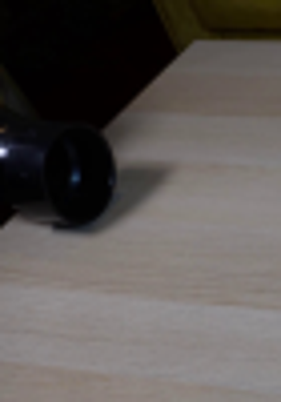
视觉工具实际返回图片 4
视觉工具实际返回图片 5
视觉工具实际返回图片 6
视觉工具实际返回图片 7
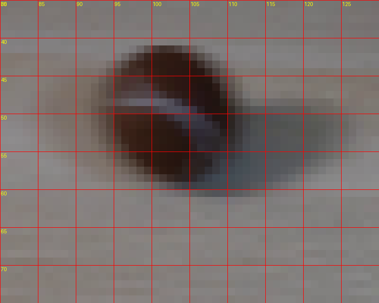
视觉工具实际返回图片 8
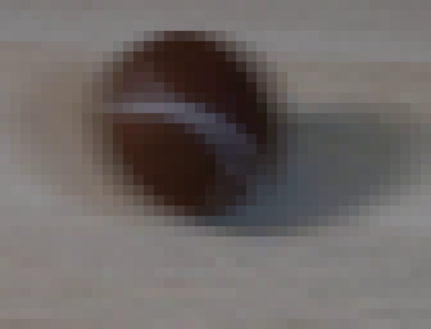
视觉工具实际返回图片 9
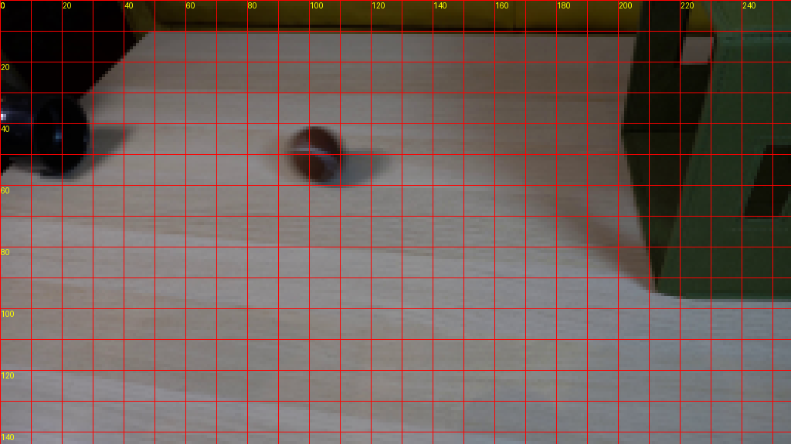
视觉工具实际返回图片 10
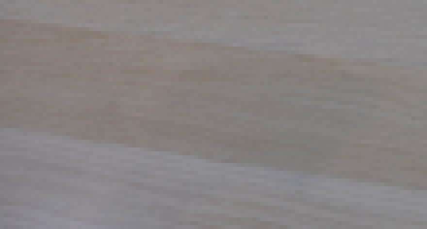
视觉工具实际返回图片 11

视觉工具实际返回图片 12
视觉工具实际返回图片 13
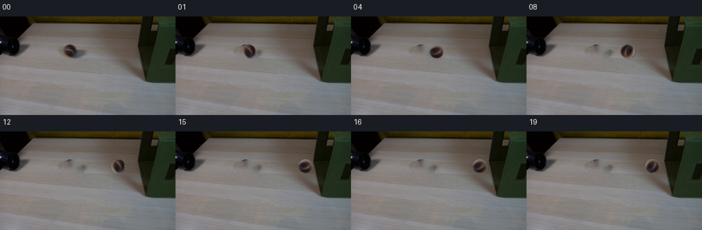
视觉工具实际返回图片 14
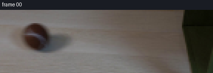
视觉工具实际返回图片 15
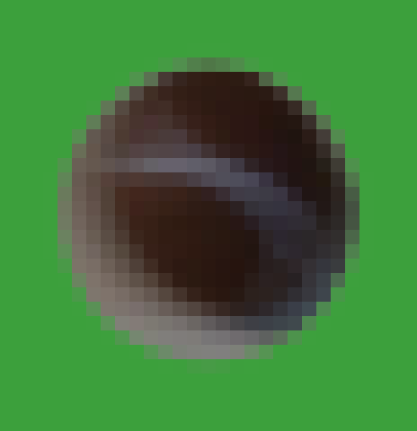
视觉工具实际返回图片 16
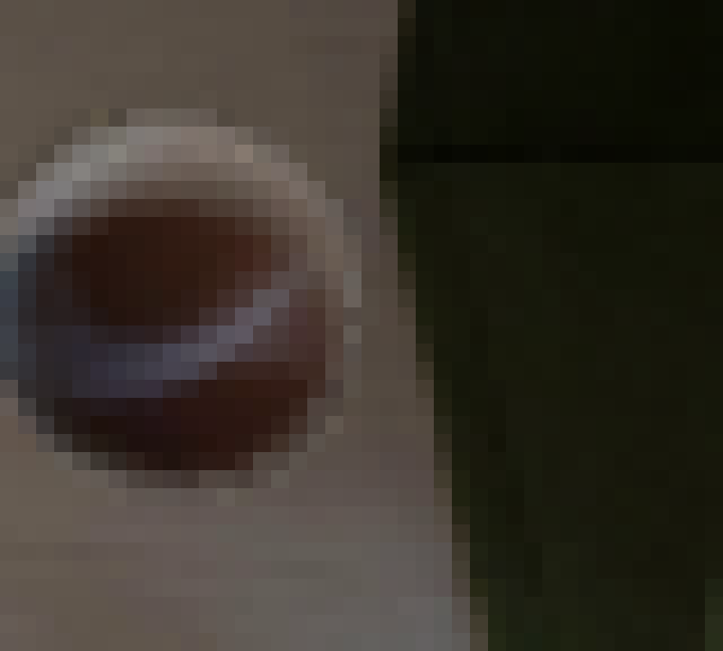
视觉工具实际返回图片 17
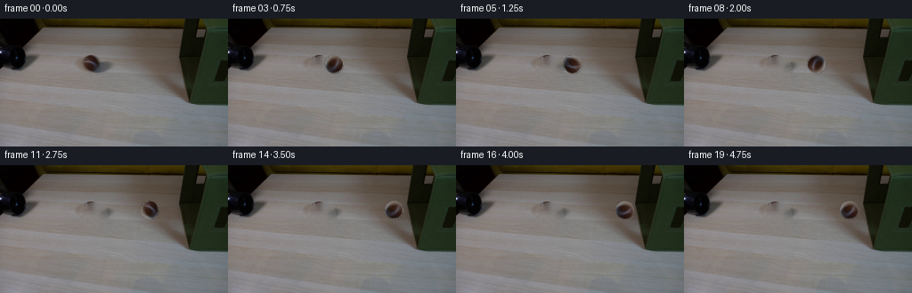
保存候选 3 份；完成命令 40 次；可验证图片返回 17 张。原始 API 响应与完整日志保留在本地。